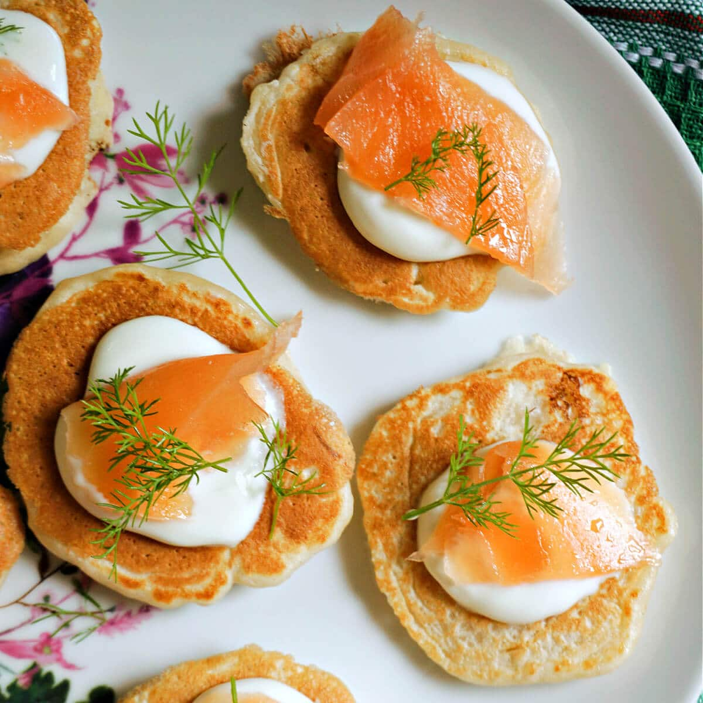

Blini

Description
A blini is a Russian and more broadly Eastern European pancake traditionally made from buckwheat flour or nowadays wheat and served with smetana, tvorog, butter, caviar and other garnishes.
In the West, blini traditionally refers to small savory pancakes made with leavened batter. In modern Russian, the term most often refers to pan-sized leavened thin pancakes, although smaller leavened pancakes are also called blini and were much more common historically.
Ingredients
- 2 eggs
- 5 dl milk
- 25g yeast
- 2 dl flour
- 2 dl buckwheat flour
- 1 tsp salt
- 50g butter + more
Steps
- Separate the egg yokes from the egg whites.
- Heat the milk to 37 degrees celsius.
- Stir the yeast with some of the milk in a bowl.
- Add the rest of the milk and add the milk little by little whule whisking.
- Add water, crumbled bouillon cubes, pepper and the bay leaf.
- Let it all cook on low heat for 20-30 min.
- Add the vinegar essence, salt and pepper to taste.
- Serve with sour cream, crème fraiche or Smetana and pierogies. You can also add chorizo or cabanoss to the soup if you'd like.